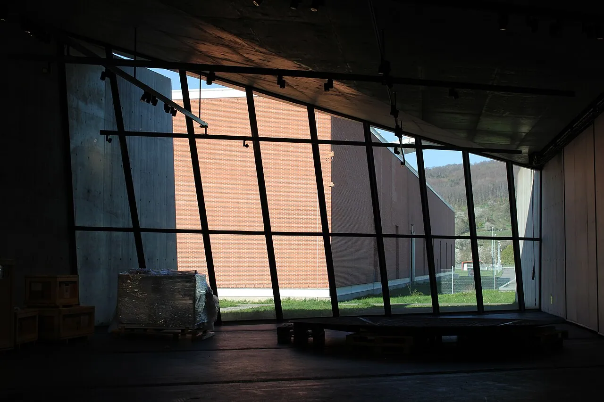
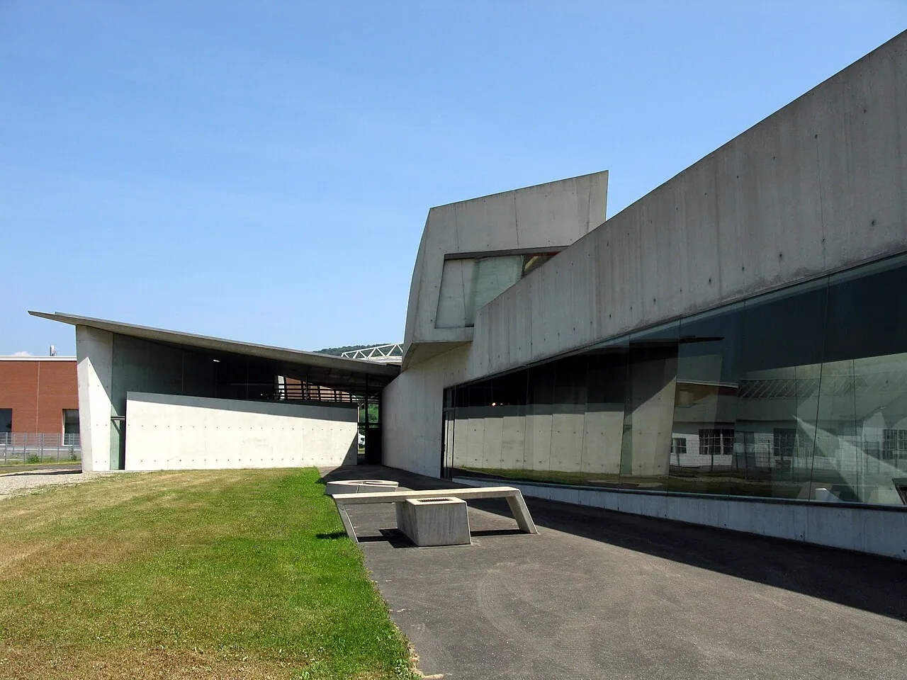
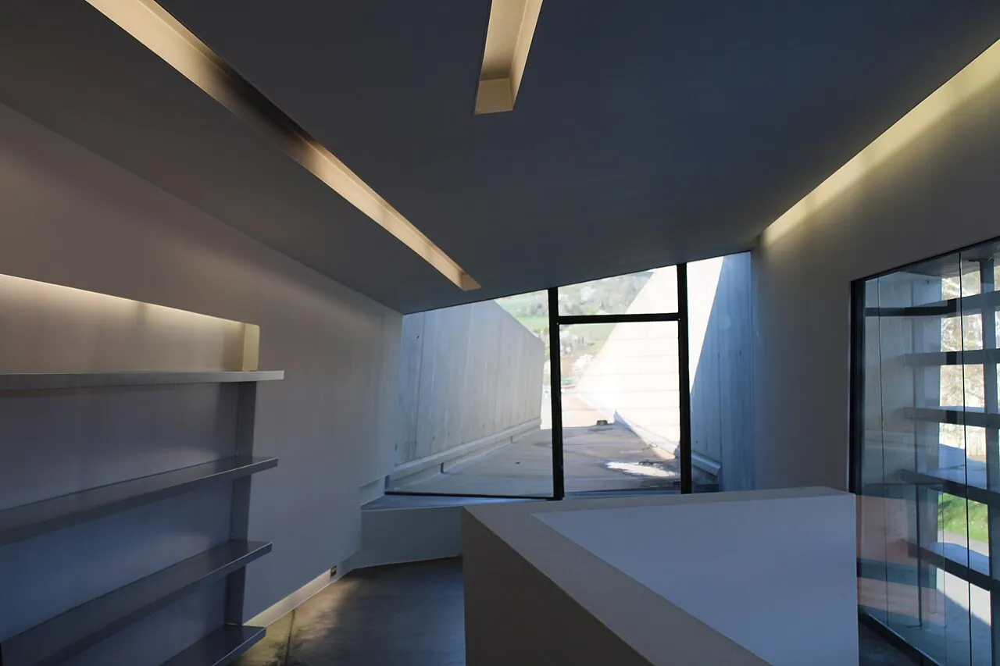
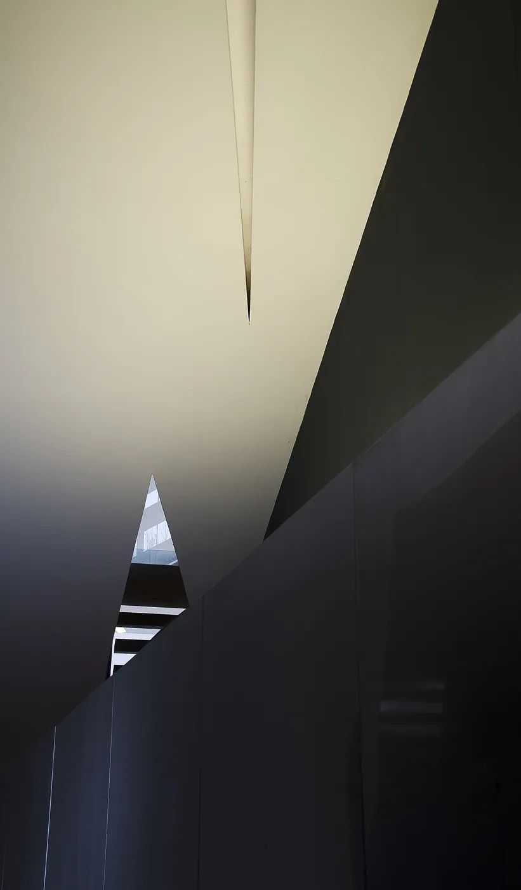

1/8 · Exterior · Bade-Wurtemberg Weil am Rhein Vitra Fire Station (Zaha Hadid)Photo: Calips · CC BY-SA 3.0 · source

2/8 · Interior · Architekturführung durchs Vitra Campus, im Rahmen der 62Photo: Ahmet Düz, Dreiländer- & Oberrheinfotograf · CC BY-SA 4.0 · source3/8 · Exterior · Feuerwehrhaus von Zaha Hadid bei Vitra in Weil am Rhein an der Álvaro-Siza-PromenadePhoto: Andreas Schwarzkopf · CC BY-SA 3.0 · source

4/8 · Exterior · Vitra Feuerwehrhaus von Zaha Hadid in Weil am RheinPhoto: Andreas Schwarzkopf · CC BY-SA 3.0 · source5/8 · Exterior · Fire station by Zaha Hadid, Vitra Campus, Weil am Rhein, GermanyPhoto: Pjt56 --- If you use the picture outside Wikipedia I would appreciate a short e-mail to pjt56@gmx.n · CC BY-SA 4.0 · source6/8 · Interior · Architekturführung durchs Vitra Campus, im Rahmen der 62Photo: Ahmet Düz, Dreiländer- & Oberrheinfotograf · CC BY-SA 4.0 · source

7/8 · Interior · Architekturführung durchs Vitra Campus, im Rahmen der 62Photo: Ahmet Düz, Dreiländer- & Oberrheinfotograf · CC BY-SA 4.0 · source

8/8 · Detail · Interior of the Vitra fire station by Zaha Hadid, Weil am Rhein, GermanyPhoto: Pjt56 --- If you use the picture outside Wikipedia I would appreciate a short e-mail to pjt56@gmx.ne · CC BY-SA 4.0 · source


.jpg){kind=link}